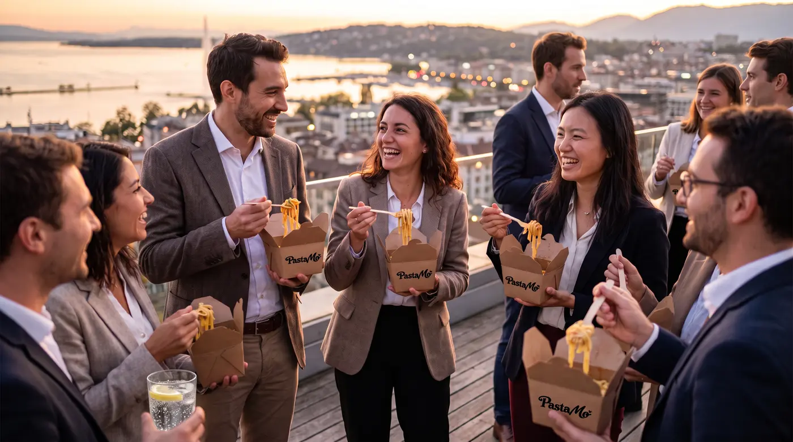
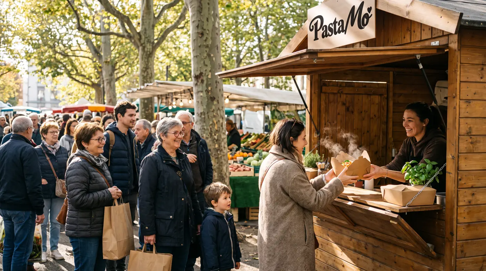
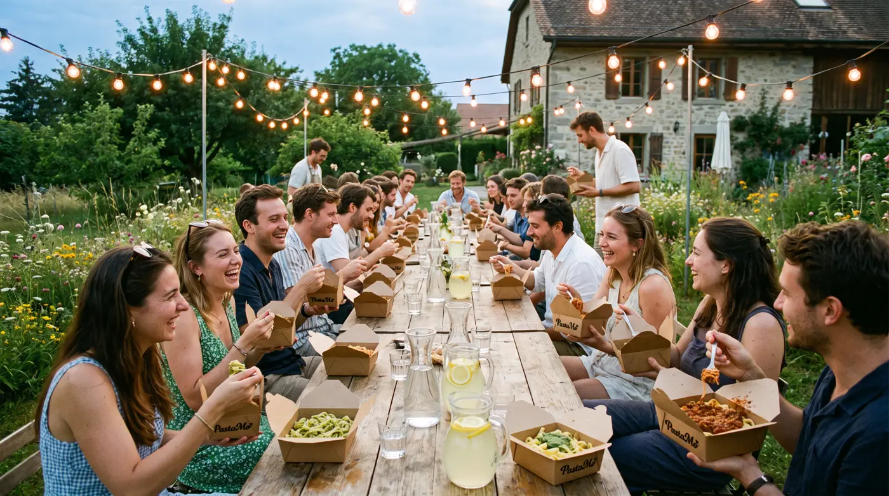

01 D'ici
Des pâtes fraîches d'un artisan genevois. Des sauces préparées en Suisse.
Une carte courte, trois recettes de famille, une Pasta Box qui se tient d'une main : de quoi manger chaud, debout, au milieu de votre événement.
Street food italienne · Genève
Pâtes fraîches artisanales de Genève, sauces préparées en Suisse. Servies chaudes et vite sur vos festivals, marathons, tournois, fêtes communales et événements d'entreprise.
01 D'ici
Une carte courte, trois recettes de famille, une Pasta Box qui se tient d'une main : de quoi manger chaud, debout, au milieu de votre événement.
02 La généreuse
Un ragù de bœuf halal mijoté longuement en Suisse, sans alcool. Le dernier geste : une pluie de parmesan.
03 La fraîche
Basilic frais, pignons, parmesan et huile d'olive, préparé à froid en Suisse pour garder toute sa fraîcheur.
04 L'essentielle
Des tomates mijotées doucement en Suisse, de l'huile d'olive et du basilic. Une sauce douce et généreuse qui met tout le monde d'accord.
05 Événements
Un stand compact, un menu court, un service rapide : Pasta Mo' s'adapte à la foule, au lieu et au rythme de votre événement.
Grosses affluences, longues soirées : plusieurs postes de service, la file avance.
Le repas d'après-course, réservé avec le dossard : l'organisateur connaît les quantités à l'avance.

Afterworks, portes ouvertes, séminaires : un traiteur qui cuisine devant vos équipes.

Un rendez-vous de quartier, une grande tablée : un stand qui s'installe vite et sert chaud.

Mariages, anniversaires, fêtes de quartier : de quoi nourrir tout le monde, sans chichis.
06 Le stand
07 Notre histoire
Pasta Mo', c'est d'abord Morgane Scaramuzzi. Ses racines sont italiennes et, chez elle, la cuisine se transmet en famille : les sauces qu'elle prépare aujourd'hui viennent de ces recettes, qu'elle cuisine avec la même passion depuis toujours.
Avec Malik Younes, elle a imaginé un stand simple : de bonnes pâtes fraîches d'un artisan genevois, ses trois sauces maison, et un service qui suit le rythme de vos événements.
Morgane & Malik
Faire venir Pasta Mo
Dites-nous le type d'événement, la date, le lieu et le nombre de personnes. On revient vers vous avec une proposition claire.